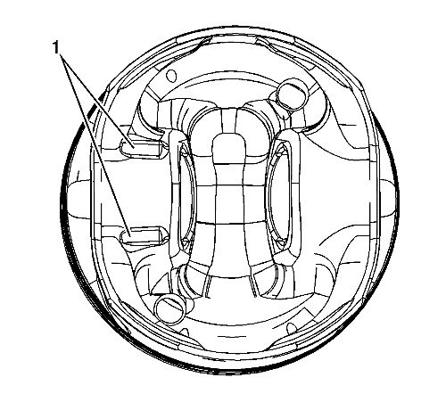
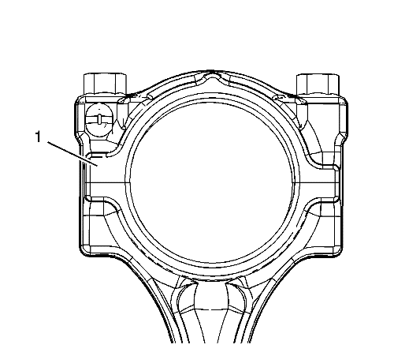
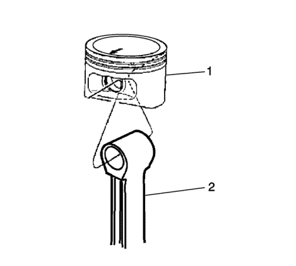
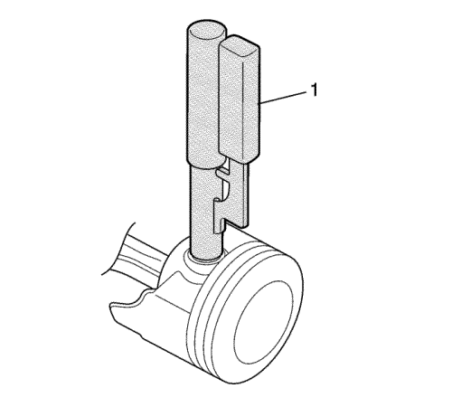
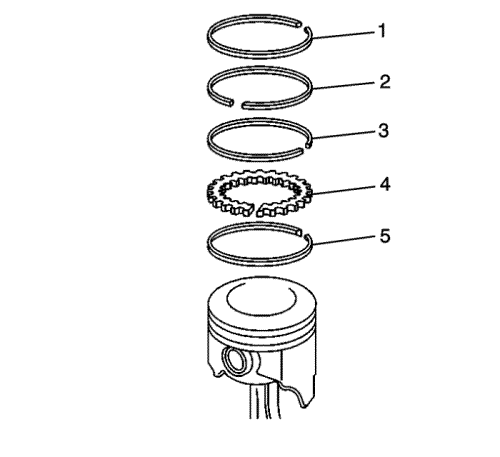

Nota: Monte el pistón en la biela con la flecha de la parte superior hacia la parte frontal, orientada hacia la parte frontal del motor.
Nota: El saliente (1) de fundido puede estar en cualquiera de las ubicaciones o en ambas, en función del desplazamiento.
- El saliente (1) de fundido, en la parte inferior del pistón, debe ir a la parte posterior del bloque.

- El elemento (1) más grande, en el lateral dividido situado en un lateral de la biela, debe ir a la parte frontal del bloque.

- Monte la biela (2) con el pistón (1)

Atención: Durante el montaje, instalar correctamente los clips de los bulones de los pistones en sus ranuras de fijación para evitar que se produzcan daños en el motor.
- Utilizar el procedimiento siguiente para ensamblar el bulón del pistón y su clip:
| 4.1. | Untar de aceite el bulón del pistón. |
| 4.2. | Monte un lado de un soporte del bulón del pistón en la ranura de sujeción utilizando la herramienta de montaje EN-46745. Girar el clip que hasta que esté completamente asentado en la ranura. |
| 4.3. | Montar la biela y el bulón del pistón. |
Empujar el bulón del pistón hasta que haga contacto con el clip ya instalado.
| 4.4. | Monte el segundo soporte del bulón del pistón utilizando la herramienta de montaje (1) EN-46745. |
| 4.5. | Asegurarse de que el pistón se desplaza libremente en la biela. |

Atención: Utilice un expansor para montar los segmentos de pistón. Los segmentos pueden dañarse si se expanden más de lo necesario.
- Ensamblar los siguientes componentes del segmento de engrase (segmento inferior):
| 5.2. | Anillo inferior del segmento de engrase (4) |
| 5.3. | Anillo superior del segmento de engrase (3) |
- Monte el anillo (2) de compresión inferior. Asegurarse de que la marca de identificación está orientada hacia arriba.
- Monte el anillo (1) de compresión superior.